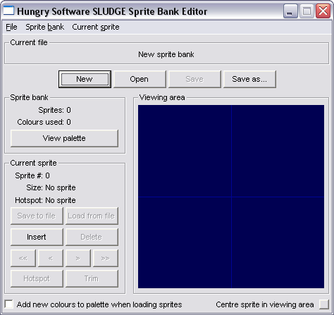

Use the SLUDGE sprite bank editor to create the character, object and mouse cursor animation frames used in your game. With no sprite bank loaded, this is how the sprite bank editor appears on your screen.
 Loading an existing sprite bank:
Click the "Open" button or choose "Open" from the "File" menu. Then, select a file to load. Creating a new, empty sprite bank:
Click the "New" button or choose "New" from the "File" menu. The program will return to the state shown in the image above. Adding a sprite to a sprite bank:
First of all, find the location in the sprite bank where you'd like to load an image using the "<" and ">" buttons (or "<<" and ">>" to go straight to the start or end of the current sprite bank). You can then either insert an image before the selected sprite (by pressing "Insert") or replace the selected sprite (by pressing "Load from file").
If the checkbox at the bottom of the main window is selected (labelled "Add new colours to palette when loading sprites") any new colours used by the image you're adding which aren't already in the palette are added automatically. Otherwise, if the image uses colours which don't appear in the sprite bank's palette, the closest colours which do exist in the palette will be used. If you're adding a sprite to a bank with no palette (for example, if you're creating a new bank from scratch) you will need to have the box checked, as otherwise there will be no colours from which to find a closest one. Setting the hotspot for a sprite:
The hotspot for a sprite is the point around which all scaling is to be done, and also the point which will be positioned at any given (x, y) when the sprite is displayed. For a mouse pointer, the hotspot should be positioned at the tip of the arrow or the centre of the crosshair (and so on). For a character, it is suggested that the hotspot is the point at ground level directly beneath the character's body, between the feet.
When adding a sprite to a bank, you are taken to the hotspot dialog box automatically after loading the image. (If you're inserting a sprite, the co-ordinates are set to (0, 0); if you're replacing an existing sprite, the co-ordinates remain at their previous values.) Here, you can enter the co-ordinates of the hotspot by hand, making it easy to be pixel-perfect. Hit "Apply" to apply your changes. Alternatively, press "Centre" to set the hot-spot to the centre of the image (useful for inventory icons) or "Base" to set the hotspot to halfway across the bottom row of pixels (approximately the correct hotspot for characters, although you may need to then tinker with the values manually, as explained above). After you're happy with the positioning of the sprite, hit "Close".
To open the hotspot dialog box for an existing sprite, hit the button marked "Hotspot" on the main window. Trimming a sprite:
Should a sprite have transparent space around it, you can automatically trim the sprite by hitting the "Trim" button. The sprite's hotspot values will change if required, so that the sprite image itself doesn't move in the display window. You can also trim an entire sprite bank in one fell swoop, by selecting "Trim all" from the "Sprite Bank" menu. Positioning sprites in the viewing window:
Sometimes the top, bottom or side of a sprite may stick out of the viewing area because of the location of the axes. In such a situation, hit the button marked "Centre sprite in viewing area" to move the sprite to the centre of the rectangular viewing region. Alternatively, position the mouse over the viewing region, hold down the mouse button and drag the mouse to move the viewing area yourself. When you're happy, release the mouse button. Saving an individual sprite:
To save a sprite as a TGA file, first find the sprite you wish to save using the direction buttons (representing first, back 1, forward 1 and end of bank respectively). Then hit the "Save to file" button and choose where, and under which name, to save the image file. Removing an individual sprite:
To delete a sprite from a sprite bank, select it using the direction buttons and then hit the "Delete" button. Saving a sprite bank:
To save the currently loaded sprite bank, hit either the "Save" or "Save as..." button. Hitting "Save" will overwrite the file from which the sprite bank was loaded (or the file as which it was last saved, depending on which happened most recently). Hitting "Save as..." will prompt you to choose a location and name for the sprite bank file as which you wish to save. If the box at the top of the window reads "New sprite bank" the "Save" button will act in the same way as the "Save as..." button, as there is no file currently associated with the sprite bank. Transparency in sprites:
When loading and saving individual sprites from / as TGA image files, the colour magenta (#FF00FF or 255, 0, 255) is used as transparent; the same colour as is treated as transparent by in the addOverlay and mixOverlay functions. Viewing and working with the palette:
Hit the "View palette" button to see the current palette. Each sprite bank can use only one palette, and the maximum number of colours is 255. In the palette dialog, you can automatically remove unused colours (thereby making the file size smaller and making it possible to add images which use a greater number of their own, new colours) and sort the palette by brightness. SLUDGE and this SLUDGE documentation are copyright Hungry Software 2000-2006